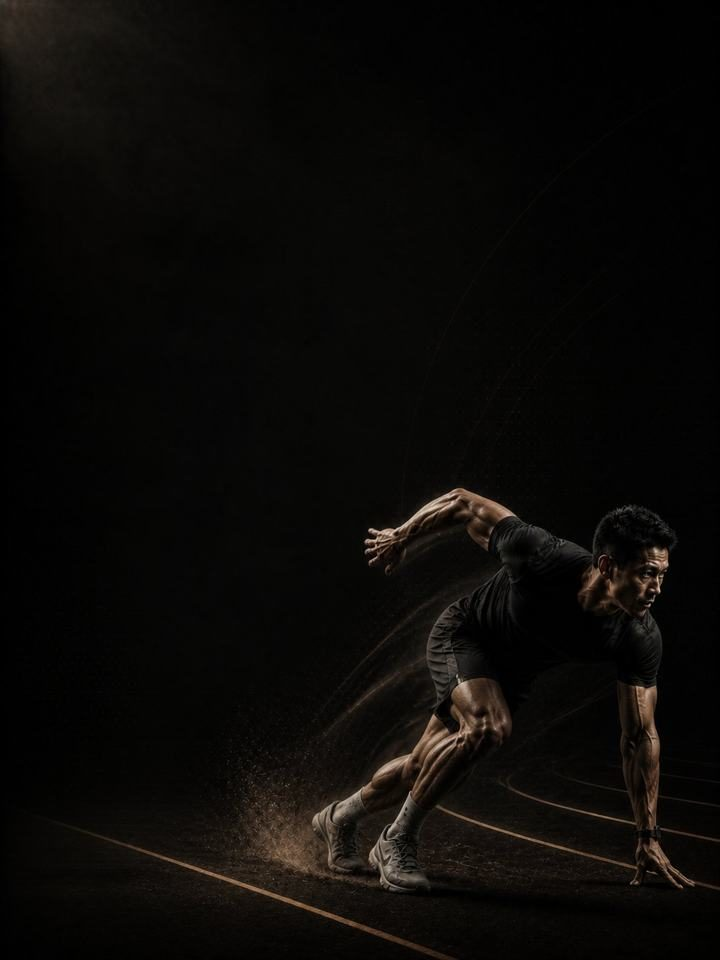

السرعة الخطية · الأساس
العَدْو لا يُصيب الرياضيين. العَدْو بجسم غير مستعدّ هو الذي يُصيبهم.
- مناسب لـعدّائي السرعة، ولاعبي كرة القدم والرغبي
- أيام التدريب3 أيام في النادي أسبوعيًا، حول رياضتك
- مدة الجلسة48–60 دقيقة
- المعداتنادٍ متكامل، ومضمار أو 40 م من أرض مستوية، وزلّاجة وحواجز صغيرة
- الصيغةملف PDF للهاتف، وكل تمرين مرتبط بفيديو توضيحي
لمن هذا البرنامج
رياضيون يحتاجون إلى الجري بسرعة، في العَدْو أو كرة القدم أو الرغبي، ويريدون أن يقع عمل السرعة لاحقًا في السنة على جسم قادر على تحمّله.
في السرعة القصوى تنتج العضلات الخلفية للفخذ قوة شبه قصوى وهي في طول شبه أقصى، وهناك تتمزّق. ليس العَدْو ما يُصيب الرياضيين، بل العَدْو بجسم لم يُعَدّ له. لذلك هذه ليست كتلة سرعة. إنها اثنا عشر أسبوعًا من القوة العامة الثقيلة، وتمارين لامركزية مقصودة للعضلات الخلفية للفخذ، وميكانيكا عَدْو تُتدرَّب بسرعات متحكَّم فيها، حتى تستطيع الكتلة التالية أن تطلب سرعة قصوى حقيقية.
موقعه في السنة: الكتلة 1 من 4. الأساس، والبناء، والمنافسة، والاستشفاء. طبّقه في مرحلة الإعداد العام، بعيدًا عن المنافسات.
أسبوعك
ثلاثة أيام غير متتالية في النادي، تُنفَّذ بالترتيب، حول رياضتك.
| الأحد | الاثنين | الثلاثاء | الأربعاء | الخميس | الجمعة | السبت |
|---|---|---|---|---|---|---|
| اليوم 1 | رياضتك | اليوم 2 | رياضتك | اليوم 3 | راحة | راحة |
يمكن أن يجتمع تدريب المضمار ورفع الأثقال في يوم واحد، والمضمار أولًا دائمًا. وقتك ضيق؟ نفّذ اليوم 1 واليوم 2 فقط. تحتفظ بالقوة والميكانيكا، وتخسر بعض الحجم.
كل جلسة تسير بالطريقة نفسها:
- الإحماء، 8–10 دقائق. التسلسل نفسه في كل مرة. تنشيط الأرداف والوركين والكتفين قبل أي عمل سريع.
- السرعة والقدرة الانفجارية، 12–15 دقيقة. العَدْو والقفز والرمي، مع تعافٍ كامل بين المجموعات. تتوقّف المجموعة لحظة تراجع الجودة.
- القوة، 20–25 دقيقة. الرفعات المركّبة الثقيلة، مع دقيقتين إلى ثلاث دقائق بين المجموعات. هذه قوة، لا لياقة.
- عمل الأنسجة، 8–10 دقائق. النوردي وكوبنهاغن والسمانة. في النهاية، ولا يُحذف أبدًا.
الترتيب مهم. السرعة والقدرة الانفجارية قبل التعب، والرفعات الثقيلة قبل التمارين المساعدة. ويأتي عمل الأنسجة في النهاية لأنه الجزء الوحيد الذي لا يجوز تخطّيه أبدًا، وفي النهاية ينجو من الجلسة المستعجلة بدلًا من أن يُقتطع من وسطها.
كيف تتقدّم الأسابيع الـ12
ثلاث مراحل، مدة كل منها أربعة أسابيع. ترتفع القوة طوال الأسابيع الاثني عشر. وينتقل الجري من التمارين الفنية، إلى الجري دون الحد الأقصى، إلى أول عمل سريع حقيقي في المرحلة 3، ولا يتجاوز جلسة سرعة حقيقية واحدة في الأسبوع في هذه الكتلة.
| الأسابيع 1–4 | الأسابيع 5–8 | الأسابيع 9–12 | |
|---|---|---|---|
| المرحلة | القدرة البنيوية | إنتاج القوة | المرونة الارتدادية والسرعة |
| الهدف | بناء القوة القصوى وقدرة أنسجة العضلات الخلفية للفخذ | زيادة إنتاج القوة بينما يبقى الجري دون الحد الأقصى | بناء القوة الارتدادية وإدخال السرعة القصوى في العَدْو |
| الجري | تمارين فنية وجري خفيف متدرّج فقط | الجري بين العلامات، والجري التصاعدي، وتسارعات قصيرة | جلسة سرعة حقيقية واحدة في الأسبوع، تُبنى تدريجيًا |
| المجموعات الفعلية أسبوعيًا | 68 | 70 | 70 |
| متوسط الجهد | جهد 6.9/10، والتكرارات المتبقية نحو 3 | جهد 7.7/10، والتكرارات المتبقية نحو 2 | جهد 7.6/10، والتكرارات المتبقية نحو 2 |
| مرات الهبوط أسبوعيًا | 52 | 52 | 60 |
| الرميات أسبوعيًا | 20 | 20 | 20 |
المرحلة في لمحة
المجموعات التدريبية أسبوعيًا حسب ما تدرّبه. الخط المتقطع هو مستوى الجهد.
موقع هذه المرحلة في السنة التدريبية
نفّذ المراحل الأربع بالترتيب لتكتمل سنة تدريبية كاملة.
الجهد (RPE) تقييم من 10 لمدى صعوبة المجموعة. والتكرارات المتبقية هي عدد التكرارات الجيدة الإضافية التي كنت تستطيع أداءها، فعبارة «التكرارات المتبقية نحو 2» تعني أنه يتبقى في الخزان نحو تكرارين.
أسابيع التخفيف: الأسبوعان 6 و12 أخف. تُخفَّض المجموعات إلى النصف ويقلّ حجم الجري، فتعيد الاختبار وأنت مرتاح.
القواعد التي تجعله ينجح
- الجودة تقرّر متى تنتهي المجموعة. جلسة العَدْو سلسلة من الجهود القصوى مع تعافٍ كامل. والعَدْو وأنت متعب لا يدرّب شيئًا سوى خطر الإصابة، لذلك تتوقّف المجموعة عندما تسوء الأزمنة، لا عندما تنتهي التكرارات.
- التعافي الكامل يعني أربع إلى خمس دقائق. عُد مشيًا ببطء وانتظر. إذا كنت تلهث في بداية التكرار التالي، فقد صار تمرين لياقة، وهذه ليست كتلة لياقة.
- النوردي مرتين أسبوعيًا، كل أسبوع. البرامج المبنية على التمارين اللامركزية للعضلات الخلفية للفخذ تخفض إصاباتها إلى النصف تقريبًا، وهو أكبر أثر حقّقه أي شيء في هذه العائلة.
- احسب أمتارك السريعة من الأسبوع 9. المرحلتان 1 و2 تمارين فنية وجري دون الحد الأقصى فقط. ومن الأسبوع 9، ابنِ تدريجيًا حتى نحو 200–400 متر فوق 90% من الجهد على امتداد الأسبوع، واكتب الرقم في كل جلسة. القفزات المفاجئة في الجري السريع، لا الجري السريع نفسه، هي ما يسبق إصابات العضلات الخلفية للفخذ.
- المضمار قبل الأثقال، دائمًا. العمل السريع يأتي أولًا في الجلسة وأولًا في الأسبوع. العَدْو بساقين متعبتين من رفع الأثقال يغيّر ميكانيكا جريك ويعلّمك النمط الخطأ.
- احسب مرات الهبوط، لا المجموعات فقط. كل قفزة، وحجلة، ووثبة، وهبوط من ارتفاع هو هبوط تدفع أوتارك ثمنه، بما في ذلك قفزات الإحماء. الرميات والعَدْو ليست مرات هبوط. أبقِ الأسبوع تحت نحو 120 هبوطًا في هذه الكتلة، مع احتساب تدريب رياضتك إضافةً إليه.
المصطلحات
- الكتلة التدريبية: 12 أسبوعًا. هذا البرنامج. تطوّر الكتلة الواحدة مجموعة واحدة من الصفات إلى مستوى محدّد.
- المرحلة (الدورة المتوسطة): 4 أسابيع. تستهدف كل منها صفة واحدة. وأربعة أسابيع اختيار لا قاعدة، فالمدة تتبع الهدف.
- الأسبوع التدريبي (الدورة الصغرى): حيث يرتفع الجهد، وتُضاف المجموعات، ويقع أسبوع التخفيف.
- السنة التدريبية (الدورة الكبرى): أربع كتل بالترتيب (الأساس، والبناء، والمنافسة، والاستشفاء)، نحو 48 أسبوعًا.
كيف تقيس تقدّمك
الأسبوعان 6 و12 أسبوعا إعادة اختبار، تُجريها وأنت مرتاح في نهاية كل أسبوع تخفيف. ويبدأ كل أسبوع أيضًا بفحص مدته 90 ثانية: ثلاث وثبات طويلة من الثبات في بداية اليوم 1، وتحتفظ بأفضلها. إذا كانت النتيجة أقل من متوسطك المتحرّك بأكثر من 10%، فخفّف ذلك اليوم: تُحذف تمارين القدرة الانفجارية، وتخسر كل رفعة مجموعة واحدة، أيًا كان المكتوب في الصفحة.
شكل التقدّم الجيد
- الأسابيع 1–4: ترتفع القوة بسرعة. وتسبّب تمارين العضلات الخلفية للفخذ ألمًا عضليًا حقيقيًا في الأسبوعين الأولين، وهذا طبيعي ويهدأ.
- الأسابيع 5–8: تتوقّف التمارين الفنية عن الإحساس بأنها تمارين.
- الأسابيع 9–12: يبدو أول جري سريع متحكَّمًا فيه لا محمومًا.
الهدف ليس زمنًا سريعًا في الأسبوع 12، بل أن تصل إلى كتلة البناء قادرًا على العَدْو بقوة دون أن تقرّر العضلات الخلفية للفخذ غير ذلك.
احترم الأسبوع
احسب كل شيء: المباريات، وتدريب رياضتك، والنادي، والنوم. القفزات المفاجئة في حمل التدريب الأسبوعي هي أوثق مؤشر على الإصابة في الرياضة غير الاحترافية. في أسبوع رياضي ثقيل، احذف جلسة نادٍ أو اختصر تمارين القدرة الانفجارية، لكن لا تختصر الرياضة والتعافي معًا أبدًا. احمِ 7–9 ساعات من النوم، فهو أقوى أداة متاحة للأداء، وأرخصها.
الأدلة العلمية
كل برنامج في المكتبة مبني على أبحاث منشورة، وقوة تلك الأبحاث مذكورة صراحةً لا ضمنًا. وحيث تكون الأدلة محدودة، تقول الصفحة ذلك.
| النتيجة | المصدر | ما لا تُظهره |
|---|---|---|
| البرامج التي تتضمّن تمرين نورديك للعضلات الخلفية للفخذ تخفض إصابات العضلات الخلفية للفخذ إلى النصف تقريبًا. | van Dyk, Behan & Whiteley, Br J Sports Med 2019. Meta-analysis, 15 studies, 8,459 athletes. PMID 30808663 | نسبة الخطر 0.49. يصغر الأثر لكنه يبقى قائمًا عند استبعاد الدراسات الثماني عالية خطر التحيّز (0.55). وهي تقيس البرامج التي تتضمّن التمرين، لا التمرين وحده. |
| تدريب القوة يخفض الإصابات الرياضية إلى أقل من ثلث معدلها في المجموعة الضابطة. أما الإطالة فلا تخفضها. | Lauersen, Bertelsen & Andersen, Br J Sports Med 2014. Meta-analysis of 25 RCTs, 26,610 participants. PMID 24100287 | نسبة الخطر 0.32 لتدريب القوة و0.96 للإطالة. تفاوتت التجارب كثيرًا، ولم تكن الجرعة موحّدة. |
| تمرين واحد للعضلات الضامّة، يُؤدّى ثلاث مرات أسبوعيًا قبل الموسم ومرة أسبوعيًا خلاله، خفض مشكلات أعلى الفخذ الداخلي المبلَّغ عنها بنسبة 41%. | Harøy et al., Br J Sports Med 2019. Cluster-randomised trial, 35 teams, 652 male footballers. PMID 29891614 | نسبة الأرجحية 0.59. المشكلات مبلَّغ عنها ذاتيًا، وفي كرة القدم شبه الاحترافية للرجال فقط. ولم تُكرَّر الدراسة على النساء أو في رياضات أخرى. |
| أي وصفة تدريب معقولة أفضل من عدم التدريب. الأحمال الأثقل تحتل المرتبة الأعلى للقوة، والمجموعات المتعددة تحتل المرتبة الأعلى لحجم العضلات. | Currier et al., Br J Sports Med 2023. Network meta-analysis, 178 strength and 119 hypertrophy studies. PMID 37414459 | كانت الفروق بين الوصفات صغيرة، وكلها نجحت. |
ماذا بعد
بعد 12 أسبوعًا:
- الكتلة التالية: السرعة الخطية · البناء
- منطقة واحدة تحتاج إلى عمل: السلسلة التصحيحية
قبل الشراء: احصل على موافقة طبية أولًا إذا
- كان لديك ألم في الصدر، أو ضيق تنفس غير معتاد، أو خفقان، أو دوخة أثناء المجهود.
- كان لديك ضغط دم مرتفع غير منضبط، أو مرض قلبي معروف، أو خضعت لعملية جراحية مؤخرًا.
- كنتِ حاملًا أو بعد الولادة بفترة قصيرة. احصلي على موافقة وبرنامج مخصص أولًا.
- كان لديك ألم حاد في مفصل واحد لا يهدأ. ابدأ ببرنامج أكسس التصحيحي المناسب.
هذا البرنامج إرشاد عام للياقة البدنية، ولا يغني عن التقييم الطبي.